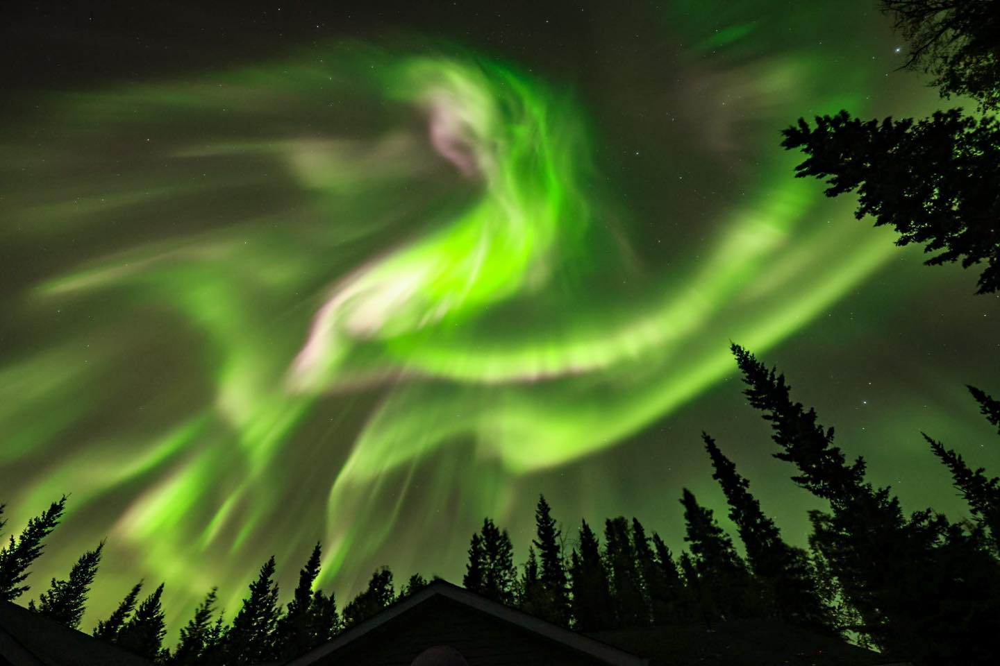
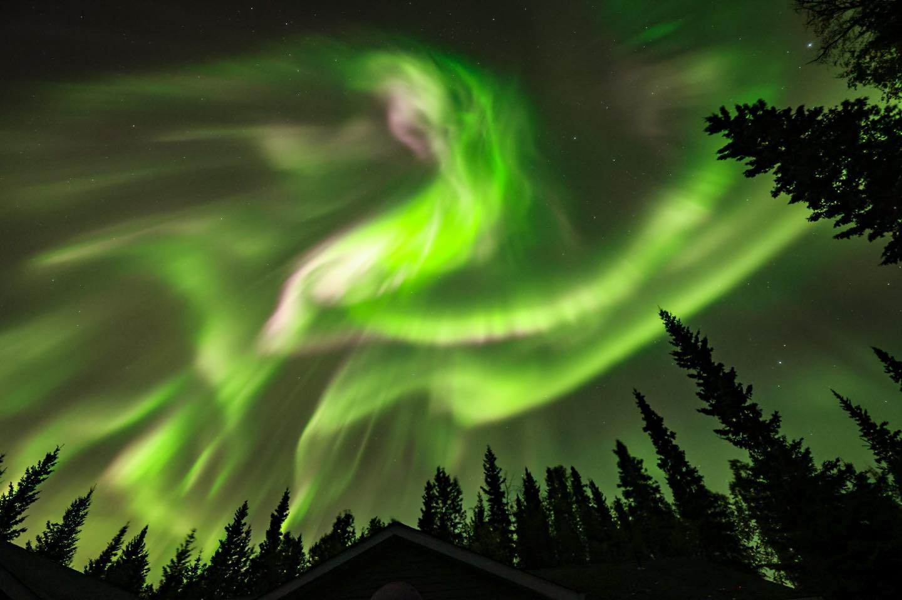

Night Sky in Alaska
Stars, Moonlight, and the Aurora
Night observing here has a certain quiet to it. The cold settles in, the sky deepens to a velvet blue, and the universe feels very close.
 


Wildlife Encounters
Sometimes the sky isn’t the only thing watching. Moose, lynx, and even the occasional bear wander through the yard during observing sessions.
Tonight’s Visitor
Click the button for a story...